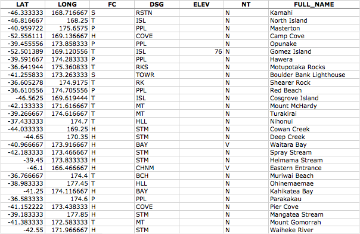
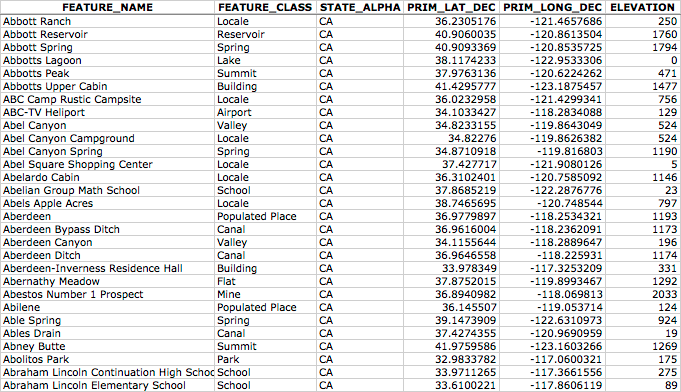

其他类型地理空间数据的来源#
Sources of other types of geospatial data
到目前为止，我们研究过的矢量和栅格地理空间数据通常用于提供有关地球本身的图像或信息。但是，地理空间应用程序通常必须将数据放置在地球表面上，即对某个地方或事件等进行地理配准。在本节中，我们将研究另外两个地理空间数据源；在这种情况下，数据库将城市、城镇、自然特征和兴趣点放置在地球表面上。
这些数据可以以两种重要方式使用。首先，它可用于标记特征 - 例如，将标签“伦敦”放置在英格兰南部的地理配准图像上。其次，这些数据可用于按名称定位某些东西，例如，允许用户从下拉列表中选择一个城市，然后以该城市为中心绘制地图。
The vector and raster geospatial data we have looked at so far is generally used to provide images or information about the Earth itself. However, geospatial applications often have to place data onto the surface of the Earth—that is, georeference something such as a place or event. In this section, we will look at two additional sources of geospatial data; in this case databases that place cities, towns, natural features, and points of interest onto the surface of the Earth.
This data can be used in two important ways. First, it can be used to label features— for example, to place the label “London” onto a georeferenced image of southern England. Secondly, this data can be used to locate something by name, for example by allowing the user to choose a city from a drop-down list and then draw a map centered around that city.
GEOnet 名称服务器#
GEOnet Names Server
GEOnet Names Server 提供了一个大型的地名数据库。它是美国地名委员会决定的官方非美国地名库。
以下截图是 GEOnet Names Server 数据库中的一个摘录：
正如从这个例子中可以看到的，这个数据库包括了经度和纬度值，此外还包括表示地点类型的代码（如人口密集区、行政区、自然特征等）、海拔（如适用）以及表示名称类型的代码（如官方名称、常规名称、历史名称等）。
GEOnet Names Server 数据库包含大约 500 万个特征，涵盖 800 万个名称。它包括除美国和南极洲以外的所有国家。
The GEOnet Names Server provides a large database of place names. It is an official repository of non-American place names, as decided by the US Board on geographic names.
The following screenshot is an extract from the GEOnet Names Server database:
As you can see from this example, this database includes longitude and latitude values, as well as codes indicating the type of place (populated place, administrative district, natural feature, and so on), the elevation (where relevant), and a code indicating the type of name (official, conventional, historical, and so on).
The GEOnet Names Server database contains approximately 5 million features, with 8 million names. It includes every country other than the US and Antarctica.
数据格式#
Data format
GEOnet Names Server 的数据以简单的制表符分隔的文本文件形式提供，文件中的第一行包含字段名称，随后的行包含各个特征，每行一个。将这些名称数据导入到电子表格或数据库中非常简单。
有关提供的字段和各种代码的含义的更多信息，请参阅：
The GEOnet Names Server’s data is provided as a simple tab-delimited text file, where the first row in the file contains the field names and the subsequent rows contains the various features, one per row. Importing this name data into a spreadsheet or database is trivial.
For more information on the supplied fields and what the various codes mean, please refer to:
获取和使用 GEOnet 名称服务器数据#
Obtaining and using GEOnet Names Server data
GEOnet Names Server 的官方网站是：
http://earth-info.nga.mil/gns/html
访问 GEOnet Names Server 的主要方式是通过各种搜索工具，这些工具提供了对数据的筛选视图。要直接下载数据而不是通过搜索，可以访问：
http://earth-info.nga.mil/gns/html/namefiles.htm
每个国家都有列表；只需点击您想要数据的国家的超链接，您的浏览器将下载一个 .zip 文件，其中包含该国家所有特征的制表符分隔文本文件。还有一个选项可以将所有国家的数据下载到一个文件中，该文件的大小为 370 MB。
下载文件并解压后，您可以将文件直接加载到电子表格或数据库中以进行进一步处理。通过筛选 特征分类（FC）、特征指定代码（DSG） 以及其他字段，您可以选择所需的特定地名集，并直接在您的应用程序中使用这些数据。
The main website for the GEOnet Names Server is:
http://earth-info.nga.mil/gns/html
The main interface to the GEOnet Names Server is through various search tools that provide filtered views onto the data. To download the data directly rather than through searching, go to:
http://earth-info.nga.mil/gns/html/namefiles.htm
Each country is listed; simply click on the hyperlink for the country you want data on and your browser will download a .zip file containing the tab-delimited text file containing all the features within that country. There is also an option to download all the countries in one file, which is a 370 MB download.
Once you have downloaded the file and decompressed it, you can load the file directly into a spreadsheet or database for further processing. By filtering on the Feature Classification (FC), Feature Designation Code (DSG), and other fields, you can select the particular set of place names you want, and then use this data directly in your application.
地理名称信息系统 (GNIS)#
Geographic Names Information System (GNIS)
地名信息系统（GNIS） 是美国相当于 GEOnet Names Server 的系统，它包含美国的地名信息。
以下截图是来自 GNIS 数据库的摘录：
GNIS 包括自然、物理和文化特征，但不包括道路或高速公路名称。
与 GEOnames 数据库一样，GNIS 数据库包含由美国政府使用的官方名称，这些名称由美国地名委员会决定。GEOnames 由美国地质调查局（US Geological Survey）管理，当前包含超过 220 万个特征。
The Geographic Names Information System (GNIS) is the US equivalent of the GEOnet Names Server—it contains name information for the United States.
The following screenshot is an extract from the GNIS database:
GNIS includes natural, physical, and cultural features, though it does not include road or highway names.
As with the GEOnames database, the GNIS database contains the official names used by the US Government, as decided by the US Board on Geographic Names. GEOnames is run by the US Geological Survey, and currently contains over 2.2 million features.
数据格式#
Data format
GNIS 名称以“管道分隔符”压缩文本文件形式提供下载。此格式使用“管道”字符（|）来分隔各个字段：
FEATURE_ID|FEATURE_NAME|FEATURE_CLASS|...
1397658|Ester|Populated Place|...
1397926|Afognak|Populated Place|...
第一行包含字段名称，后续行包含各个特征。可用信息包括特征的名称、类型、海拔、高度、该特征所在的县和州、该特征本身的经纬度坐标，以及该特征“源”的经纬度坐标（例如河流、山谷等）。
GNIS names are available for download as “pipe-delimited” compressed text files. This format uses the “pipe” character (|) to separate the various fields:
FEATURE_ID|FEATURE_NAME|FEATURE_CLASS|...
1397658|Ester|Populated Place|...
1397926|Afognak|Populated Place|...
The first line contains the field names, and subsequent lines contain the various features. The available information includes the name of the feature, its type, elevation, the county and state the feature is in, the latitude/longitude coordinate of the feature itself, and the latitude/longitude coordinate for the “source” of the feature (for streams, valleys, and so on).
获取和使用 GNIS 数据#
Obtaining and using GNIS Data
GNIS 的主要网站可以在以下地址找到：
http://geonames.usgs.gov/domestic
点击 Download Domestic Names 超链接，您将获得按州下载所有 GNIS 数据的选项，或者下载包含所有特征的单个大文件。您还可以下载包含数据特定子集的“专题地名集”，例如所有有人居住的地方、所有历史遗址等。
如果您点击某个文件格式的超链接，将弹出一个窗口，详细描述文件的结构。
下载所需数据后，您可以简单地将文件导入数据库或电子表格。若要导入到电子表格中，请使用“Delimited”格式，并将“|”作为自定义分隔符字符。然后，您可以按任何需要的方式对数据进行排序或筛选，以便在应用程序中使用。
The main GNIS website can be found at:
http://geonames.usgs.gov/domestic
Click on the Download Domestic Names hyperlink, and you will be given options to download all the GNIS data on a state-by-state basis, or all the features in a single large download. You can also download “topical gazetteers” that include selected subsets of the data—all populated places, all historical places, and so on.
If you click on one of the file format hyperlinks, a pop-up window will appear describing the structure of the files in more detail.
Once you have downloaded the data you want, you can simply import the file into a database or spreadsheet. To import into a spreadsheet, use the “Delimited” format and enter | as the custom delimiter character. You can then sort or filter the data in whatever way you want so that you can use it in your application.